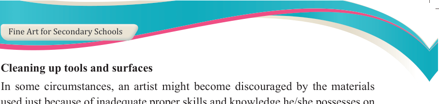
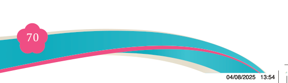
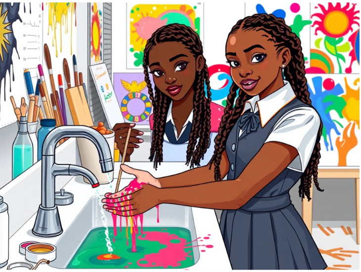

Cleaning up tools and surfaces
In some circumstances, an artist might become discouraged by the materials
used just because of inadequate proper skills and knowledge he/she possesses on

working with the tools and materials. However, once an artist is conversant with the tools and materials, he/she may become more confident and avoid the risk of losing materials.
The following are the best methods of removing and cleaning the surfaces and tools coated with acrylic paint:
(i) Removing acrylic paint from hands
Wet or dried acrylic paint is cleaned up with clean water and soap.

Figure 4.7: Washing hands by water to remove acrylic colour
(ii) Removing acrylic paint from brushes
Wet paint brushes are cleaned up with water and dried acrylic brushes with a liquid solvent like methyl acetate or equivalent product. Observe Figure 4.8
(a & b).